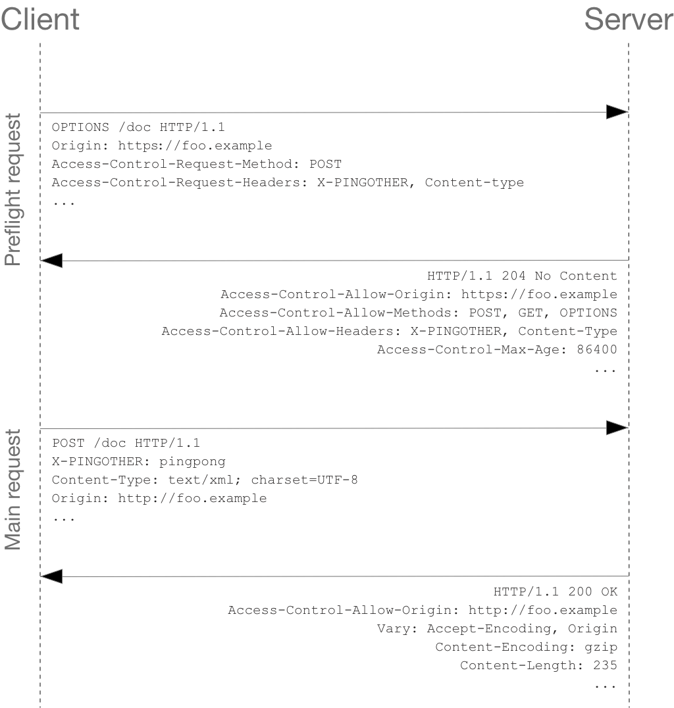

CORS
1. CORS
보안 상의 이유로 브라우저들은 cross-origin의 HTTP 요청을 제한하였지만 개발자들은 웹 애플리케이션의 고도화를 위해 브라우저 벤더사들에게 XMLHttpRequest가 cross-origin의 HTTP 요청을 할 수 있도록 개선해 주길 요청하였다.
이에 따라 브라우저 벤더사들은 서버가 허용한 범위내에서 cross-origin의 HTTP 요청을 허용시켰다.
이것이 CORS의 탄생 배경이다.
CORS(Cross-Origin Resource Sharing)는 HTTP 헤더를 사용하여 origin에서 실행 중인 웹 애플리케이션이 cross-origin의 resource(자원)에 접근할 수 있는 권한을 부여하도록 브라우저에 알려주는 메커니즘이다.

Origin
origin이란 URL 구조의 Protocol, Host, Port를 합친 것을 말한다.
2. CORS 동작 방식
CORS 동작 방식에는 크게 프리플라이트 요청(Preflight Request), 단순 요청(Simple requests), 인증정보를 포함한 요청(Credentialed Request) 3가지가 있다.
프리플라이트 요청
프리플라이트 요청(Preflight Request)은 OPTIONS 메서드를 통해 다른 도메인의 리소스로 HTTP 요청을 보내 실제 요청을 전송하기에 안전한지 확인하고 요청이 가능하다면 실제 요청을 보낸다.
cross-origin 요청은 유저 데이터에 영향을 줄 수 있기 때문에 이와같이 프리플라이트 요청(Preflight Request)을 한다.

단순 요청
단순 요청(Simple requests)은 다음 조건을 모두 충족하는 요청이다.
GET, POST, HEAD 중 하나의 메서드여야만 한다.
수동으로 설정할 수 있는 헤더는 Accept, Accept-Language, Content-Language, Content-Type 뿐이다.
Content-Type 헤더는 application/x-www-form-urlencoded, multipart/form-data, text/plain 값들만 허용된다.
인증정보를 포함한 요청
인증 관련 헤더를 포함할 때 사용하는 요청으로 XMLHttpRequest 객체나 fetch API는 별도의 옵션 없이 브라우저의 쿠키 정보나 인증과 관련된 헤더를 기본적으로 요청에 담지 않으므로 XMLHttpRequest 객체나 Request 생성자가 호출될 때 credentials 옵션을 설정해야 한다.
브라우저는 Access-Control-Allow-Credentials: true 헤더가 없는 응답을 거부하고 웹 컨테츠를 제공하지 않는다.